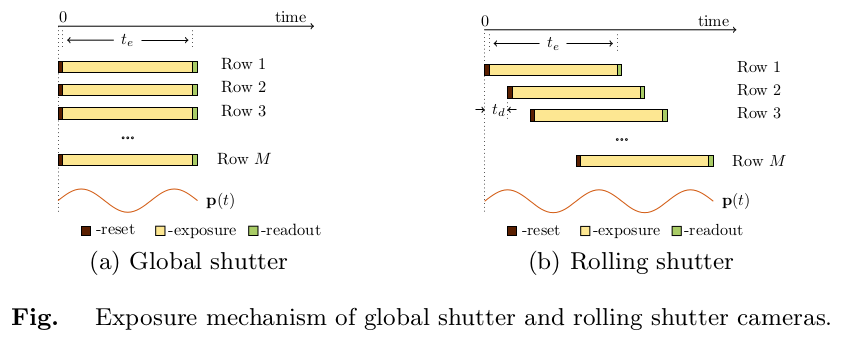
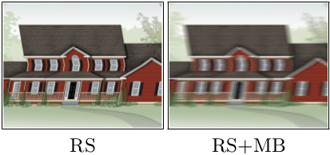
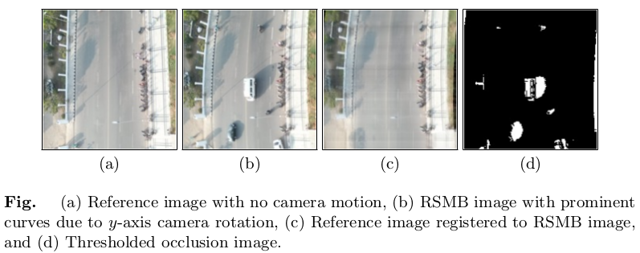
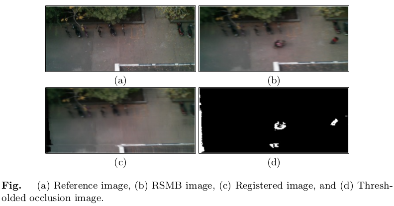

|  |  |
The coalesced presence of motion blur and rolling shutter effect is unavoidable due to the sequential exposure of sensor rows in CMOS cameras. We address the problem of detecting changes in an image affected by motion blur and rolling shutter artifacts with respect to a reference image. Our framework bundles modelling of motion blur in global shutter and rolling shutter cameras into a single entity. We leverage the sparsity of the camera trajectory in the pose space and the sparsity of occlusion in spatial domain to propose an optimization problem that not only registers the reference image to the observed distorted image but detects occlusions as well, both within a single framework.
Change Detection in the Presence of Motion Blur and Rolling Shutter Effect
A.P. Vijay Rengarajan, A.N. Rajagopalan, and R. Aravind
European Conference on Computer Vision (ECCV), Zurich, Switzerland
September 2014
Paper (1.1MB)
Poster (0.45MB)
Video spotlight
More results
@incollection{ rengarajan:2014:change,
year={2014},
isbn={978-3-319-10583-3},
booktitle={Computer Vision -- ECCV 2014},
volume={8695},
series={Lecture Notes in Computer Science},
doi={10.1007/978-3-319-10584-0_9},
title={Change Detection in the Presence of Motion Blur and Rolling Shutter Effect},
url={http://dx.doi.org/10.1007/978-3-319-10584-0_9},
publisher={Springer International Publishing},
author={Pichaikuppan, VijayRengarajanAngarai and Narayanan, RajagopalanAmbasamudram and Rangarajan, Aravind},
pages={123-137},
}
Given a reference image and an RS/RSMB image, we estimate the row-wise camera motion between the two images to register them, and simultaneously detect the regions of changes between them.
|  |
|  |
Vijay Rengarajan, Sheetal B. Gupta, A.N. Rajagopalan, and Guna Seetharaman
SPIE Defense + Security Symposium, International Society for Optics and Photonics, Baltimore, Maryland, USA
April 2015 [PDF] [Project page]